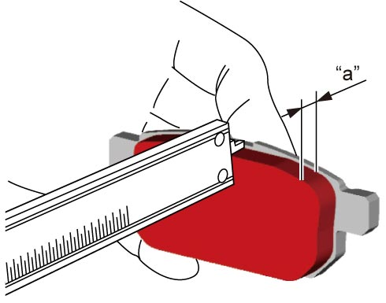

4C
| Rear Brake Pad Inspection |
NOTICE:
If the rear brake pad lining is polished with sandpaper, abrading particles will be embedded in the lining and will damage the rear brake disc.
Do not polish a pad lining with sandpaper. Replace the rear brake pads with new ones.
NOTE:
•Check for leakage of brake fluid when removing brake pads if leakage is found, repair rear brake caliper.
•Replace all rear brake pads at the same time even if only one brake pad is defective.
•Replace all rear brake pads at the same time even if only one brake pad is defective.
•Check thickness of each brake pad lining. If any lining is thinner than limit or is excessively worn on one side, replace all rear brake pads.

Rear brake pad lining thickness
“a”
Standard (new):
9 mm (0.35 in.)
Limit:
1.5 mm (0.06 in.)

 "Expand image")